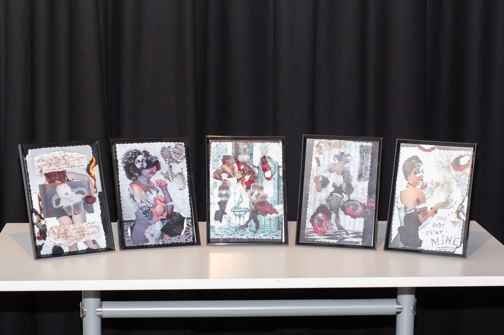

Dysmorphic (2022)
Charlotte Jaffrey
Mixed Media Collage built upon illustrations by Adolfo Arenas Alonso.
My work explores body dysmorphia, exploring the superficial craving to morph into someone else in order to prove one’s worth. These works highlight the self harmful ways in which people go about achieving these irrational goals. A melancholic aesthetic envelopes the series as an invitation to observe the psyche. I utilised the controversy of appropriation to display the desire to be others.
The unhealthy habit of comparison between peers and celebrities involving the consistent yearning to be them, halts individuality and perpetuates cloning. This also applies to creative skill fields, wherein contrasting work can be detrimental to interpersonal self discovery.

'Dysmorphic', 2022 (Detail), Image Courtesy the Artist